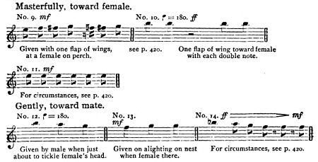

The noise produced by flocks of passenger pigeons was described as deafening, audible for miles away, and the bird's voice as loud, harsh, and unmusical. It was also described by some as clucks, twittering, and cooing, and as a series of low notes instead of actual song. The birds apparently made croaking noises when building nests, and bell-like sounds when mating. During feeding, some individuals would give alarm calls when facing a threat, and the rest of the flock would join the sound while taking off.
--Musical notes documenting male vocalizations, compiled by Wallace Craig
In 1911 American behavioral scientist Wallace Craig published an account of the gestures and sounds of this species as a series of descriptions and musical notations, based on observation of C. O. Whitman's captive passenger pigeons in 1903. Craig compiled these records to assist in identifying potential survivors in the wild (as the physically similar mourning doves could otherwise be mistaken for passenger pigeons), while noting this "meager information" was likely all that would be left on the subject. According to Craig, one call was a simple harsh "keck" that could be given twice in succession with a pause in between. This was said to be used to attract the attention of another pigeon. Another call was a more frequent and variable scolding. This sound was described as "kee-kee-kee-kee" or "tete! tete! tete!", and was used to call either to its mate or towards other creatures it considered to be enemies. One variant of this call, described as a long, drawn-out "tweet", could be used to call down a flock of passenger pigeons passing overhead, which would then land in a nearby tree. "Keeho" was a soft cooing that, while followed by louder "keck" notes or scolding, was directed at the bird's mate. A nesting passenger pigeon would also give off a stream of at least eight mixed notes that were both high and low in tone and ended with "keeho". Overall, female passenger pigeons were quieter and called infrequently. Craig suggested that the loud, strident voice and "degenerated" musicality was the result of living in populous colonies where only the loudest sounds could be heard.